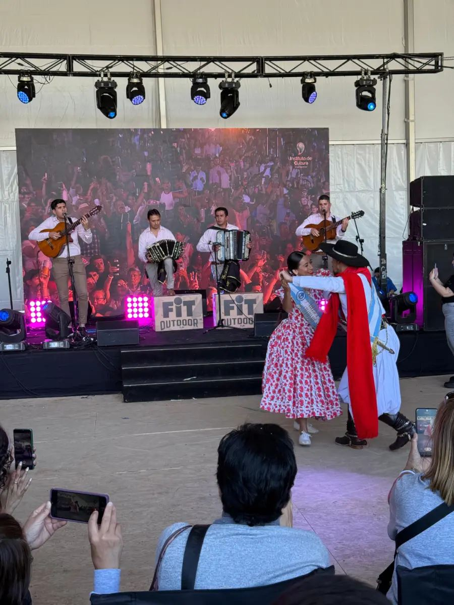

Festivals · Music
36th Fiesta Nacional del Chamamé 2027
- Dates
- –
- Venue
- Anfiteatro Mario del Tránsito Cocomarola
- Location
- Corrientes, Argentina
- Format
- In-person
- Category
- Music
- Industry
- Folk music festival
- Organiser
- Instituto de Cultura de Corrientes
- Expected attendance
- 127,000
- Official website
- https://culturacorrientes.com/corrientes-presentara-la-36a-fiesta-nacional-del-chamame-en-la-feria-internacional-del-turismo/
About
Theme 'Chamamé, Antorcha de una Herencia'. Argentina dates are local (Argentina time, UTC-3 all year, no daylight saving).
Topics: chamamé, folk music, dance, Litoral culture.
Instituto de Cultura de Corrientes: 'más de 127 mil personas disfrutaron de la 35ª Fiesta Nacional del Chamamé' (2026).
Sources
- Official (Instituto de Cultura de Corrientes, organiser) — https://culturacorrientes.com/corrientes-presentara-la-36a-fiesta-nacional-del-chamame-en-la-feria-internacional-del-turismo/
- Official (Ciudad de Corrientes tourism portal, government) — https://visitcorrientes.tur.ar/evento/fiesta-nacional-del-chamame-2027/
- Official (Instituto de Cultura de Corrientes, organiser) — https://culturacorrientes.com/record-de-asistencia-mas-de-127-mil-personas-disfrutaron-de-la-35a-fiesta-nacional-del-chamame/